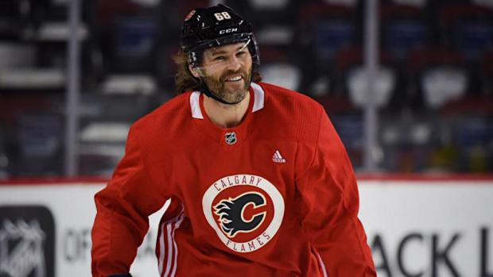

Během léta 2017 se objevovalo množství spekulací, kam Jágr v další sezóně zamíří. Sám preferoval NHL, s jejímiž týmy jeho agent vyjednával, reálná ale byla i možnost, že na začátku sezóny nastoupí za prvoligové Kladno. Dne 4. října 2017, těsně před začátkem dalšího ročníku NHL, nakonec podepsal s Calgary Flames roční kontrakt, který mu zaručil milion dolarů a další milion v bonusech. Poprvé v kariéře tak hrál za kanadský klub.
V Calgary se mu však příliš nedařilo. Do ročníku nastoupil se zpožděním, první tři zápasy vynechal, aby získal fyzičku. Na ledě poté nedostával takový prostor jako v předchozích letech, navíc se potýkal se zraněními třísel a kolena, takže do konce roku 2017 odehrál pouze 22 zápasů (z 39 možných), ve kterých zaznamenal jeden gól a šest asistencí. Naposledy za Calgary nastoupil 31. prosince 2017, v následujících týdnech nehrál kvůli opakujícím se zdravotním potížím. Klub jej na konci ledna 2018 umístil na listinu volných hráčů, což předznamenává přeřazení hokejisty na farmu, nebo do Evropy. Protože Jágra žádný jiný klub NHL neangažoval, vrátil se do rodného Kladna, jehož je také majitelem. Jeho roční smlouva s Calgary však nadále zůstala v platnosti.
